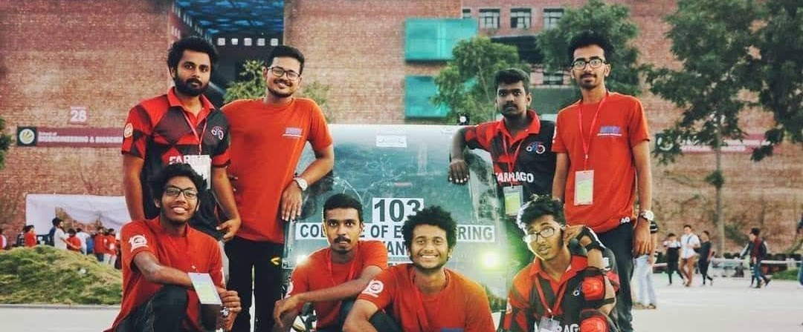

Team Farrago is the official efficycle team of CET. Click here to view our current webpage.

Our Results:
Every opportunity is a challenge anticipated.Team Farrago represents College Of Engineering Trivandrum in the National level Efficycle event conducted by SAE INDIA Northern Section. Due to the ongoing crisis, the event was conducted virtually, with evaluations spanning over three months. The evaluations were conducted by the officials of Maruti Suzuki India Limited. Proud to say, our college bagged 2 out of 5 awards in the Efficycle event and won a cash money of Rs 10,000.
In this auspicious moment, we would like to thank the Principal of CET Dr. Jiji C V, HOD Mechanical Engineering Department Dr. Anil Lal and Faculty Advisor of the team Prof. N Sasi sir for constantly guiding and supporting us. We also extend our utmost gratitude to former HOD of Mechanical Department Dr. Samson sir for his support and concern.
Also we express our greatest gratitude to all our faculty members who found time in their hectic schedule to help us improve our design reports and presentations. Those suggestions helped us gain the edge over other competitors. We dedicate our victory to the faculty team of CET.
Thank you all
Recruitment Results 2021 :
Results of Team Farrago recruitment drive 2020. Congratulations to all those who made managed to be part of the list.We thank everyone who attended the interview amidst unprecedented circumstances.